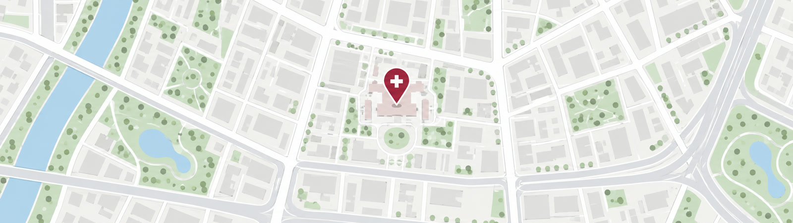

오시는 길

주소지번서울특별시 구로구 한울동 120-1 한울혈액암병원
도로명(08340) 서울특별시 구로구 한울로 120
지하철 · 버스
| 구분 | 노선 | 안내 |
|---|---|---|
| 지하철 | 2호선 한울역 | 3번 출구에서 도보 7분 · 순환 셔틀버스 운행 |
| 지하철 | 7호선 구로중앙역 | 1번 출구에서 셔틀버스 10분 간격 운행 |
| 버스 | 간선 641, 660 | 한울혈액암병원 정류장 하차 |
| 버스 | 지선 5615, 6512 | 한울로 사거리 하차 후 도보 5분 |
순환 셔틀버스
한울혈액암병원
한울역(3번출구)
구로중앙역(1번출구)
| 구분 | 한울역(2호선 3번출구) | 구로중앙역(7호선 1번출구) |
|---|---|---|
| 첫차 | 06:10 | 06:15 |
| 막차 | 22:35 | 22:40 |
- 시간표는 도로 상황에 따라 다소 변경될 수 있습니다.
- 토요일 오후, 일요일, 공휴일은 운행하지 않습니다.
한울역 - 한울혈액암병원 순환
한울혈액암병원
10분 간격 · 1회 8분 소요
한울역(3번출구)
- 2호선 한울역 3번 출구 ↔ 병원 정문 사이를 왕복 운행합니다.
한울혈액암병원 - 한울서울병원 순환 셔틀버스
한울혈액암병원
구로중앙역(1번출구)
한울서울병원
| 구분 | 한울혈액암병원 | 한울서울병원 |
|---|---|---|
| 첫차 | 07:00 | 07:00 |
| 막차 | 17:30 | 17:35 |
- 진료 예약 환자와 보호자만 이용하실 수 있습니다.
주차 안내
| 구분 | 요금 | 비고 |
|---|---|---|
| 외래 · 검사 환자 | 2시간 무료 | 진료비 수납 시 주차권 등록 |
| 입원 · 보호자 | 1일 3,000원 | 병동에서 등록 |
| 일반 방문 | 30분 1,000원 | 이후 10분당 500원 |
- 대표번호 1599-7000 로 문의하시면 주차 여유 상황을 확인해 드립니다.